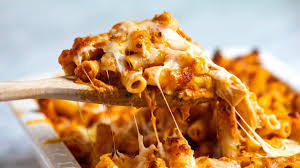

Baked Ziti Recipe

Description
A cheesy, oven-baked pasta dish with layers of ziti, meat sauce, and ricotta.
Ingredients
- Ziti pasta
- Ground beef
- Marinara sauce
- Ricotta cheese
- Mozzarella cheese
- Parmesan cheese
- Garlic
- Onion
- Olive oil
- Basil
- Oregano
- Salt & pepper
Steps
- Cook ziti until al dente.
- Sauté garlic, onion, and ground beef. Add marinara sauce and seasonings.
- Mix ricotta with Parmesan and some mozzarella.
- Layer pasta, meat sauce, and cheese mixture in a baking dish.
- Top with mozzarella and bake at 375°F (190°C) for 30 minutes.
- Let cool for 10 minutes before serving.
Home